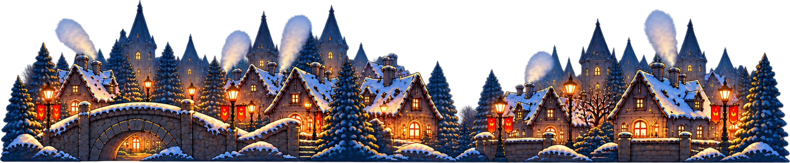

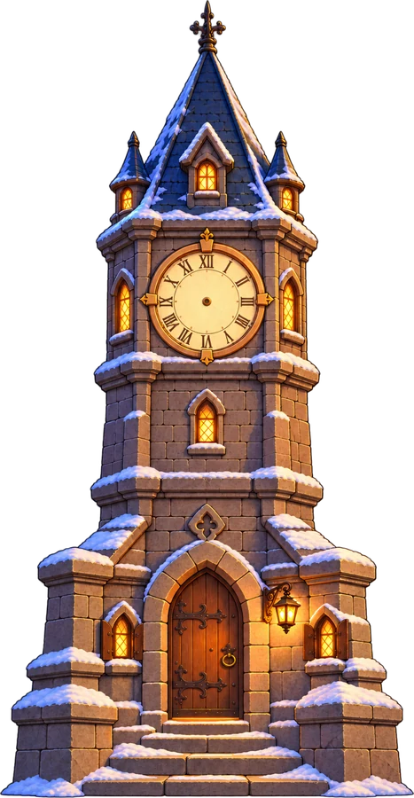

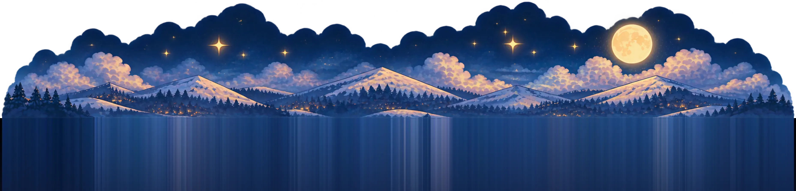
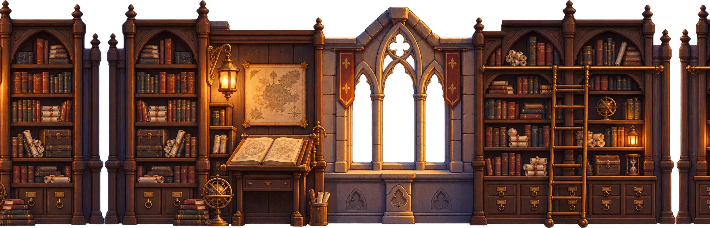
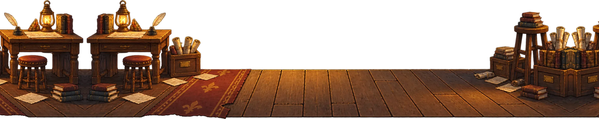
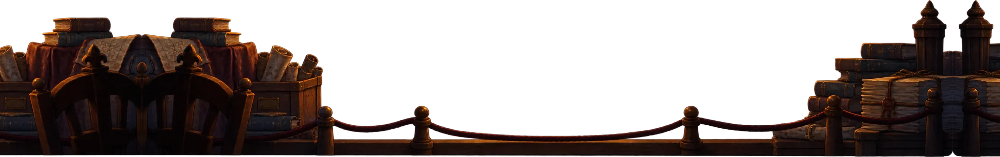
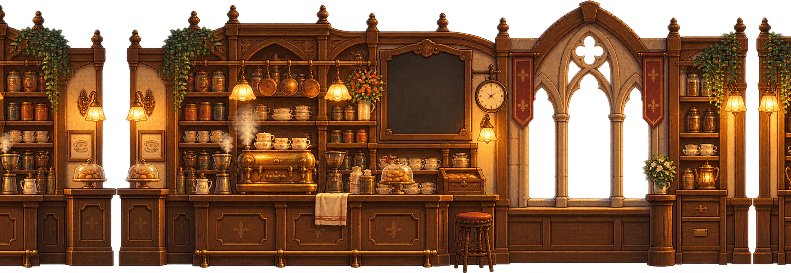
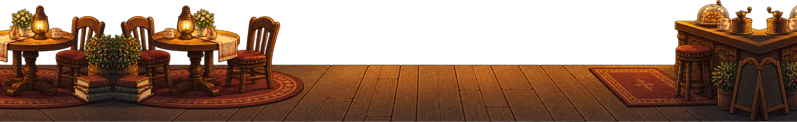
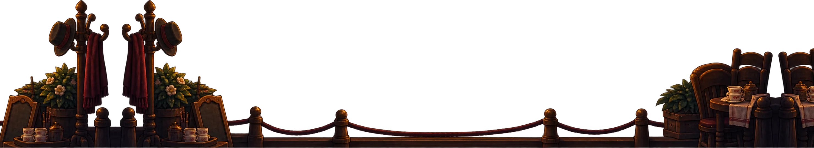
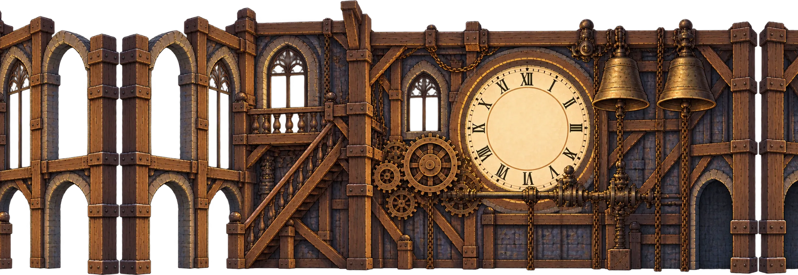
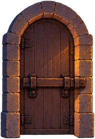
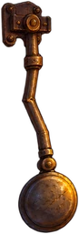
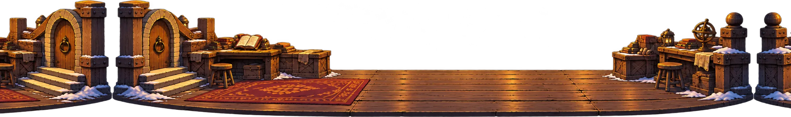
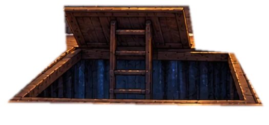
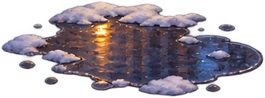
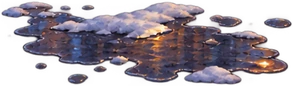
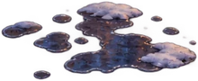
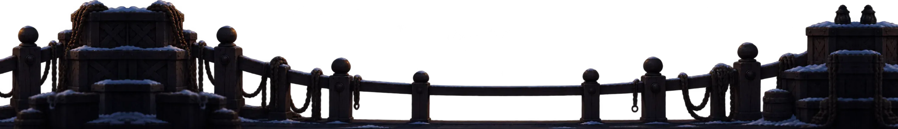
CASE C-01
The Death of Edward
Bell Village
E

PAUSED
Bell Village
CHAPTER 1
The Clock That Stopped
The door opens onto the winding room. That scene is the next one to build.
Needs: Clocktower interior background, BGB walk frames, Clockkeeper portrait.